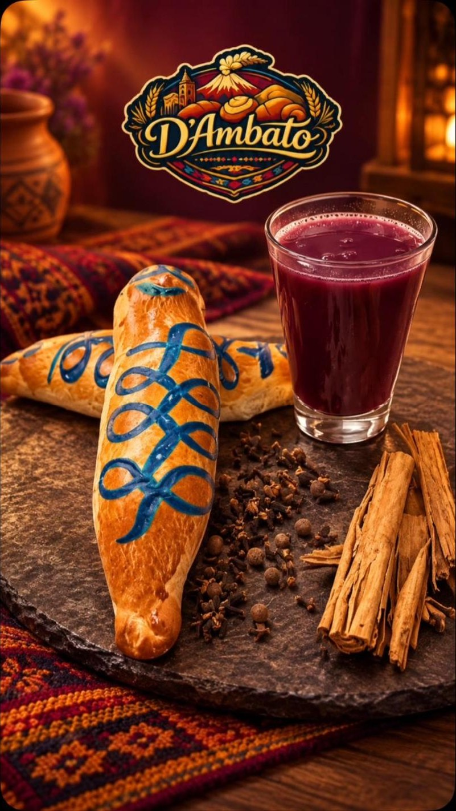
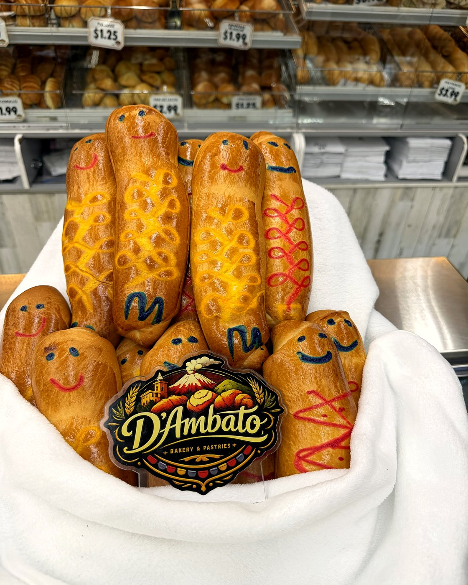
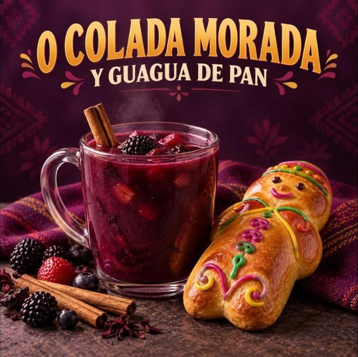

Guagua de pan & colada morada: how Ecuador celebrates Día de los DifuntosGuagua de pan y colada morada: cómo Ecuador celebra el Día de los Difuntos

Every year around November 2, Ecuadorian kitchens fill with the smell of cloves, cinnamon and simmering purple corn. It's Día de los Difuntos — Finados — the day families visit the cemetery, bring food to the people they've lost, and share a warm cup of colada morada with a sweet bread baby called a guagua de pan. In Cooper City, you'll find both at Panadería Ambato inside Flamingo Supermarket, all of October and the first week of November.
What is colada morada?
A thick, warm, deep-purple drink made from black corn flour (harina de maíz morado), blackberries (mora), naranjilla, pineapple, babaco or strawberries, and a spice bundle of cinnamon, cloves, allspice and ishpingo. It's sweet, a little tart, and served hot in a mug — closer to a spiced fruit soup than a juice. The purple comes from the corn and the mora; the color is part of the tradition.
What is a guagua de pan?
Guagua means baby in Kichwa. The bread is a sweet, soft loaf shaped like a swaddled infant and decorated with colored icing faces and patterns. Some are plain, some are filled with dulce de leche, guava or chocolate. Kids pick the one with the face they like; adults argue over which bakery's dough is softest. At D'Ambato the guaguas are baked fresh every morning, and they sell out by the afternoon on the weekends closest to Finados.
Why they go together
The pairing is older than Ecuador itself. Indigenous communities in the Andes shared purple corn drinks with the dead long before the Spanish arrived; the bread baby came later and the two met in the cemetery. Today the ritual is simpler: on November 2 (or the closest weekend) you sit with family, dip the guagua in the colada, and tell stories about the people who aren't at the table.
How to do Finados in Cooper City
- Colada morada by the cup at Panadería Ambato, daily from 7 AM through the first week of November. Ask for it hot.
- Guaguas de pan — plain or filled, decorated by hand. Two for $5 while the season lasts. Order a dozen ahead for the family at (954) 228-0435.
- Want to make colada at home? The spice bundle, harina de maíz morado, mora pulp, naranjilla and panela are all in our Ecuadorian aisle, and we ship the dry ingredients anywhere in the U.S.
- Stay for lunch: La Casita de los Ñaños serves encebollado, hornado and seco de chivo all day, and there's live music through the store every Saturday and Sunday.
Quick colada morada at home
Simmer 8 cups of water with 2 cinnamon sticks, 6 cloves, 4 allspice berries and a handful of dried ishpingo or a strip of orange peel for 15 minutes. Strain. Whisk in ½ cup harina de maíz morado dissolved in cold water, add 2 cups mora pulp, 1 cup pineapple chunks, 1 cup naranjilla pulp and ½ cup panela. Simmer 20 minutes, stirring, until it coats a spoon. Serve warm with a guagua on the side. Full recipe with sale prices on our Recipe of the Week page.
Cada año, alrededor del 2 de noviembre, las cocinas ecuatorianas se llenan de olor a clavo, canela y maíz morado hirviendo. Es el Día de los Difuntos —Finados—, el día en que las familias visitan el cementerio, llevan comida a los que ya no están y comparten una taza caliente de colada morada con un pan dulce en forma de bebé: la guagua de pan. En Cooper City las encuentras en Panadería Ambato, dentro de Flamingo Supermarket, todo octubre y la primera semana de noviembre.
¿Qué es la colada morada?
Una bebida espesa, caliente y de color morado intenso hecha con harina de maíz morado, mora, naranjilla, piña, babaco o frutilla, y un atado de especias: canela, clavo, pimienta dulce e ishpingo. Es dulce, un poco ácida y se sirve caliente en taza; más parecida a una sopa de frutas con especias que a un jugo. El color viene del maíz y de la mora; el color es parte de la tradición.
¿Qué es la guagua de pan?
Guagua significa bebé en kichwa. Es un pan dulce y suave con forma de niño envuelto, decorado con caritas y figuras de glasé de colores. Hay guaguas simples y rellenas de manjar, guayaba o chocolate. Los niños escogen la de la cara que más les gusta; los adultos discuten qué panadería tiene la masa más suave. En D'Ambato las guaguas se hornean frescas cada mañana y se acaban por la tarde los fines de semana cercanos a Finados.
Por qué van juntas
La pareja es más antigua que el propio Ecuador. Las comunidades indígenas de los Andes compartían bebidas de maíz morado con sus muertos mucho antes de que llegaran los españoles; la guagua vino después y las dos se encontraron en el cementerio. Hoy el ritual es más sencillo: el 2 de noviembre (o el fin de semana más cercano) te sientas con la familia, mojas la guagua en la colada y cuentas historias de los que no están en la mesa.
Cómo vivir Finados en Cooper City
- Colada morada por taza en Panadería Ambato, todos los días desde las 7 AM hasta la primera semana de noviembre. Pídela caliente.
- Guaguas de pan simples o rellenas, decoradas a mano. Dos por $5 mientras dure la temporada. Encarga una docena para la familia al (954) 228-0435.
- ¿Quieres hacer la colada en casa? El atado de especias, la harina de maíz morado, la pulpa de mora, la naranjilla y la panela están en nuestro pasillo ecuatoriano, y enviamos los ingredientes secos a todo Estados Unidos.
- Quédate a almorzar: La Casita de los Ñaños sirve encebollado, hornado y seco de chivo todo el día, y hay música en vivo por toda la tienda cada sábado y domingo.
Colada morada rápida en casa
Hierve 8 tazas de agua con 2 ramas de canela, 6 clavos, 4 pimientas dulces y un puñado de ishpingo seco o una cáscara de naranja durante 15 minutos. Cuela. Añade ½ taza de harina de maíz morado disuelta en agua fría, 2 tazas de pulpa de mora, 1 taza de piña en trozos, 1 taza de pulpa de naranjilla y ½ taza de panela. Cocina 20 minutos a fuego lento, revolviendo, hasta que cubra la cuchara. Sirve caliente con una guagua al lado. Receta completa con precios de oferta en nuestra página de Receta de la semana.

